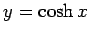
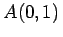

Inhalt Index DeskTop Bronstein

 Funktionen und ihre Darstellung Hyperbelfunktionen Graphische Darstellung der Hyperbelfunktionen
Funktionen und ihre Darstellung Hyperbelfunktionen Graphische Darstellung der Hyperbelfunktionen


Der Hyperbelkosinus  (2.156) ist eine gerade Funktion, die für x < 0 von  auf 1 monoton fällt und für x > 0 von 1 bis
auf 1 monoton fällt und für x > 0 von 1 bis  monoton wächst.
monoton wächst.
Das Minimum liegt bei . Asymptoten gibt es keine. Die Kurve verläuft symmetrisch bezüglich der y-Achse und bleibt mit ihren Werten oberhalb der quadratischen Parabel (schwarz gezeichnete Kurve). Da die Funktion eine Kettenlinie beschreibt, nennt man die Kurve auch Katenoide.